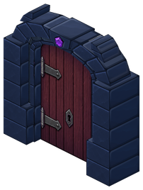
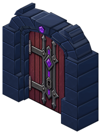
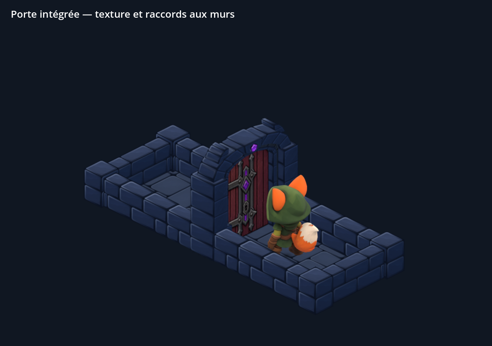
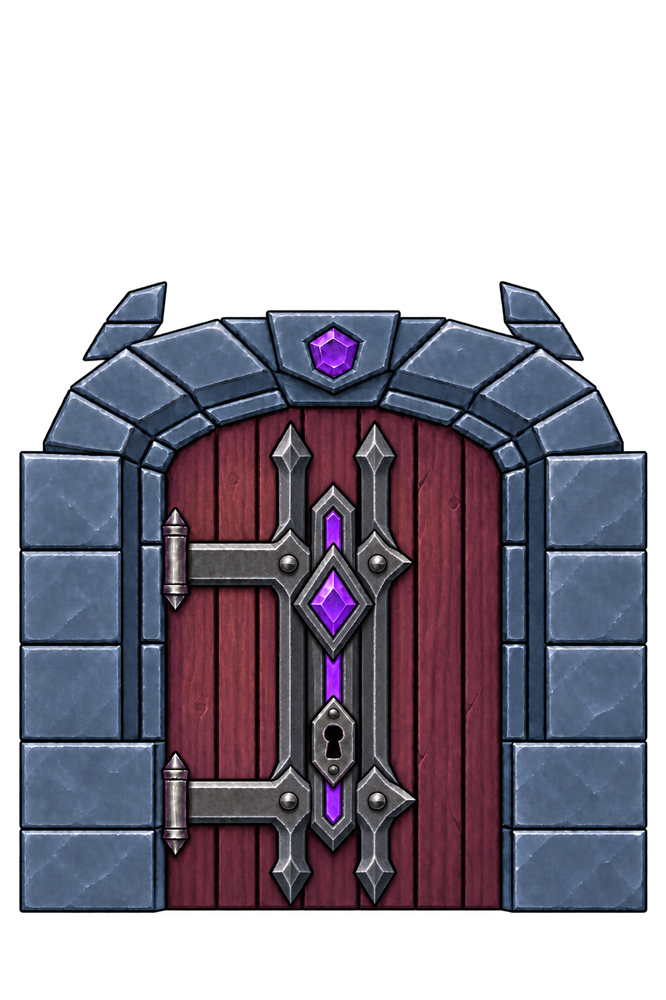

Une seule armature pour les gonds et le sceau
Deux traverses partent des gonds et rejoignent les montants pointus du sceau violet. L’ensemble retrouve le caractère maléfique de la porte, avec une serrure noire lisible entre les deux traverses.

Avant · battant trop sobre
Maintenant · ferrures réunies en « # »
Captures du kit actif dans Godot. Proportions, joints de pierre, raccords, hauteur de serrure et poses du Vulpin conservés. La vue des repères rend la porte transparente uniquement pour l’inspection.
Texture source peinte

151 sprites du kit inchangés, dont les huit parties des cadres ouverts. Seul le matériau du battant change. +13 080 octets PNG ; mémoire des atlas inchangée. Contrôles sur ordinateur, sans essai sur téléphone.
Wireframe validé · Vérifications de conservation · Contacts dans Godot · Consigne ImageGen · Sources et reproduction